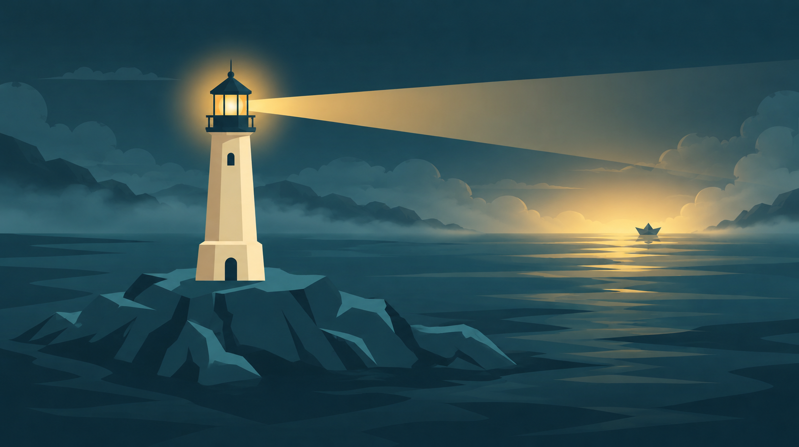
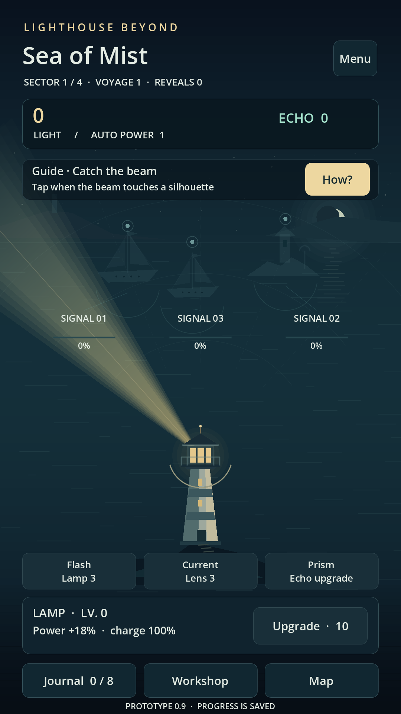
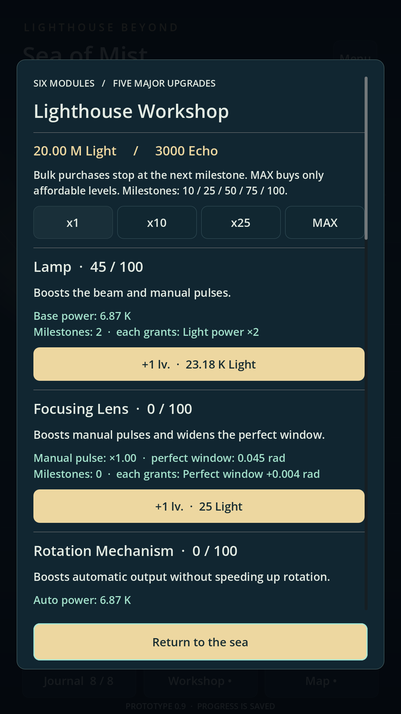
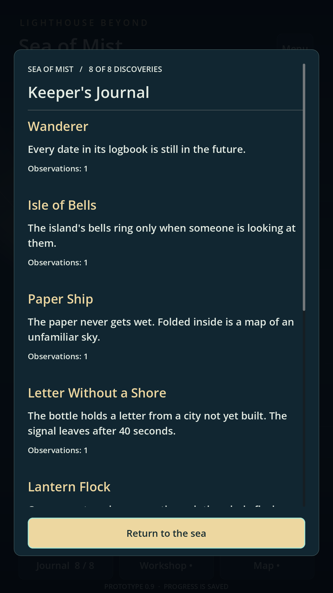

Development diary
Development has begun on Lighthouse Beyond Idle
We’ve started making Lighthouse Beyond Idle, an atmospheric game about a keeper at the edge of reality. Here, light does more than illuminate: it brings forgotten shapes back to the sea.

It starts with a simple action: guide the beam towards a silhouette and reveal what the mist conceals. Gathered Light helps you improve the lighthouse, strengthen the Lamp and develop automation. We want brief visits to the sea to become a longer, unhurried journey.
Our first builds focused on the essentials: the feel of the beam, ships appearing, understandable upgrades and saving your progress. The Workshop and Journal were already shaping the rhythm of the game — discover, improve and learn the story of this place.
The early prototype
These preserved screenshots come from version 0.9, the first prototype with an English interface. The original Russian prototype came earlier, in version 0.2. The interface and visuals have evolved since then. Select a screenshot to see it at full size.



One signal at a time
Next, we’ll fill the sea with more encounters, explore what light can do and find the right rhythm for each voyage. We’ll share the changes here, from the first silhouettes to the next horizon.